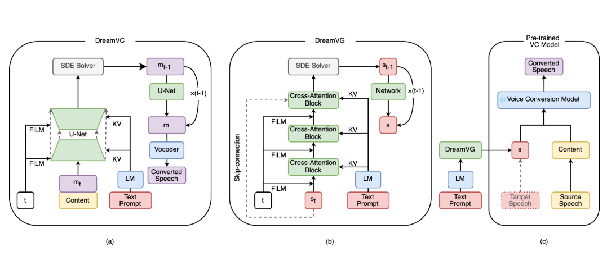

QinYu-AutoBook: End-to-End Audiobook Narration with Text-to-Timbre and Context-Aware Instruct Text to Speech
QinYu Team
TME-Lyra-Lab@Tencent
Abstract: Current production methods for multi-participant audiobooks primarily include fully manual production and semi-AI-assisted production. The semi-AI approach generally involves NLP-based script analysis, voice timbre matching, and multi-emotion speech synthesis. However, the voice matching process still requires manual selection of suitable timbres for each character, and speech synthesis necessitates manual adjustment of dialogue emotions to ensure contextual coherence—resulting in high overall production costs. To address these challenges, we propose QinYu-AutoBook, an end-to-end automated system for multi-participant audiobook production. The system comprises two main components: a Text-to-Timbre (TTT) model and a Context-Aware Instruct-TTS (CA-Instruct-TTS) model. The TTT model analyzes character personalities in multi-participant audiobooks and generates timbre embeddings that match each character's gender, age, and personality traits. The CA-Instruct-TTS model synthesizes expressive speech by analyzing contextual dialogue and incorporating fine-grained emotional instructions. Subjective and objective evaluations demonstrate that the TTT module effectively generates appropriate target timbres for each character, while the TTS module automatically produces highly natural and contextually consistent audiobook audio. This work presents a practical solution for automated multi-participant audiobook generation.

Main contributions:
- We open-source BookVoice-50h, containing 50 hours of audiobook speech with both timbre descriptions and emotion-scene instructions, providing a valuable resource for text-to-timbre and expressive TTS research.
- We propose a conditional flow matching-based Text-to-Timbre (TTT) model that generates accurate speaker embeddings from natural language descriptions, incorporating multi-scale text conditioning and explicit gender control for fine-grained timbre generation.
- We develop a Context-Aware Instruct-TTS (CA-Instruct-TTS) system that leverages LLM-derived emotion-scene instructions from narrative context to synthesize expressive speech, effectively mitigating contextual fragmentation.
- These components are integrated into an end-to-end pipeline that generates high-quality multi-participant audiobooks directly from text, demonstrating strong potential for industrial-scale applications.
Contents
Text-to-Timbre
| Category | TTT Prompt | CA-Instruct-TTS Prompt | Generated |
|---|---|---|---|
| Child | 该角色是一个幼儿男性，身份是农家小儿，性格憨厚耿直、认死理，气质质朴干净。 | 斩钉截铁|被质疑时的直白辩解|"我没说谎！这就是我看到的样子！你不信就算了！" | |
| 该角色是一个幼儿男性，身份是小少爷/稚子，性格骄纵却单纯、怕黑黏人，气质金贵带稚气，音色软糯，爱撒娇。 | 撒娇|向长辈求关注时的软糯请求|"爹爹～我怕黑，你能不能陪我睡呀？就一晚好不好嘛～" | ||
| 该角色是一个幼儿女性，身份是世家千金，性格活泼机敏、爱撒娇，气质天真灵动。 | 撒娇|向长辈讨要东西时的快语|"娘亲娘亲！你看那个糖人，翅膀亮晶晶的！给我买一个嘛～" | ||
| 该角色是一个幼儿女性，身份是小郡主/公主，性格骄慢却善良、爱助人，气质高贵带娇憨。 | 关切|看到他人困难时的别扭关心|"哼，你怎么这么笨！这点事都做不好，我… 我帮你就是了！" | ||
| Youth | 该角色是一个青年男性，身份是画师/书生，性格敏感细腻、爱采风，气质清雅忧郁，音色轻柔，语调舒缓 | 感慨|触景生情时的轻叹|"这花开得再好，也有谢的时候… 就像人间聚散。" | |
| 该角色是一个青年男性，身份是酿酒师/工匠，性格踏实执拗、重手艺，气质质朴热忱，音色粗亮，带烟火气 | 思考|做手艺时的自语|"这活儿得细着来，差一分都不行… 手艺可不能丢。" | ||
| 该角色是一个青年女性，身份是宗门圣女/仙子，性格清冷高傲、不食烟火，气质高洁矜持，音色清越冰冷，语调平淡 | 冷漠|拒绝他人时的平淡语调|"凡尘情爱，不过镜花水月。你我殊途，请回吧。" | ||
| 该角色是一个青年女性，身份是医者/药师，性格温婉善良、细腻包容，气质清雅含蓄，音色柔和温暖，语速舒缓 | 关切|安抚受伤者时的轻语|"乖，吃了这糖丸就不疼了。让姐姐看看伤口，很快就好。" | ||
| Middle-aged | 该角色是一个中年男性，身份是王朝将军，性格铁血威严、霸气侧漏，气质不怒自威 | 坚定|阵前发布指令时的呐喊|"三军听令！擂鼓，进军！后退者，斩！" | |
| 该角色是一个中年男性，身份是山村猎户/农夫，性格朴实憨厚、沉默寡言，气质质朴善良 | 关切|拒绝陌生人时的缓慢回应|"山里？不去不去。那林子邪乎，城里人莫要去送死。" | ||
| 该角色是一个中年女性，身份是隐居高手/毒师，性格古怪孤僻、手段狠辣，气质阴郁危险 | 嘲讽|嘲讽对手时的冷笑|"就这点本事也敢来？你的毒，给我家狗当洗脚水都不配！" | ||
| 该角色是一个中年女性，身份是丧夫寡妇/孤母，性格忧郁坚韧、撑家计，气质悲苦却倔强 | 悲伤|丧亲后的泣诉|"你个死鬼… 丢下我们娘俩… 但我会撑下去的… 一定……" | ||
| Elderly | 该角色是一个老年男性，身份是退隐老帝/太上皇，性格深不可测、威势犹存，气质泰山压顶 | 严厉|谈及权势时的低语|"这天下，终究还是朕的天下。有些人，手伸太长了。" | |
| 该角色是一个老年男性，身份是家族老祖/活化石，性格慈祥护短、偶尔顽皮，气质深藏不露 | 宠溺|逗晚辈时的苍老声|"小皮猴，又想掏曾祖的葫芦？来，让我看看你根基练得如何。" | ||
| 该角色是一个老年女性，身份是慈祥祖母/接生婆，性格唠唠叨叨、心地善良，气质温暖和蔼 | 宠溺|哄孩子时的轻哼|"哦哦哦～宝宝乖，睡觉觉～奶奶的小心肝哟…" | ||
| 该角色是一个老年女性，身份是庵主/道姑，性格清心寡欲、洞察世情，气质冷静出尘 | 冷漠|拒绝访客时的语调|"红尘已断，施主请回。青灯古佛，便是归宿。" | ||
| Non-human | 该角色是一个非人类树精（中年男性），身份是古木灵/山林守护者，性格沉稳寡言、爱自然，气质古老带绿意 | 感慨|抚花叶时的叹息|"又一个百年过去了… 当年种我的人，如今轮回成了谁呢？" | |
| 该角色是一个非人类猫妖（青年女性），身份是宠妖/捣蛋精，性格慵懒狡黠、好奇心重，气质妩媚灵活 | 撒娇|索要食物时的鼻音|"嗯～今天太阳真好呀… 小鱼干呢？没有就不干活哦。" | ||
| 该角色是一个非人类机器人（中性），身份是星际AI副官，性格冷静高效、绝对忠诚，气质可靠 | 平静|报告情况时的电子音|"航线清晰，无异常波动。舰体完整性 100%。愿为您服务。" | ||
| 该角色是一个非人类混沌灵火（无性别），身份是先天灵物/破坏者，性格顽皮毁灭、不可测，气质危险灼热 | 兴奋|跳跃时的童声|"嘻嘻～烧起来啦！好看！真好玩！再来多一点！" |
Context-Aware InstructTTS
| Speaker | Emotional Scene Prompt | Generated |
|---|---|---|
| Speaker 1 | 愤怒、质问|怀疑伴侣不忠时的尖锐质问|"你心里难不成还有人？或者，你看上了今日的魏无勋？" | |
| 无奈|评价家人缺点时的语气|"你姐不都这副德性吗，从小到大都这样。亲戚们都不喜欢她。" | ||
| 遗憾惋惜|对晚辈婚姻选择的叹息|"我看顾雨泽啊，这辈子是不打算结婚了，给他介绍了好几个相亲对象，没一个看上的。" | ||
| 懊恼、关切担心|为自己冲动行为后悔时的自责与担忧|"我刚刚当着他们，也就是乱说的，我只是气不过，想要替你出头。你怎么也跟着我乱来？" | ||
| Speaker 2 | 愤怒、质问|怀疑伴侣不忠时的尖锐质问|"你心里难不成还有人？或者，你看上了今日的魏无勋？" | |
| 悲伤、咆哮|失去至亲时的崩溃哭喊|"小姐，你要是走了，我怎么办？我怎么办呢？" | ||
| 悲伤、哀求|面对逝者时的绝望乞求|"寻儿，睁开眼看看我。" | ||
| 懊恼、关切担心|为自己冲动行为后悔时的自责与担忧|"我刚刚当着他们，也就是乱说的，我只是气不过，想要替你出头。你怎么也跟着我乱来？" | ||
| Speaker 3 | 愤怒、质问|怀疑伴侣不忠时的尖锐质问|"你心里难不成还有人？或者，你看上了今日的魏无勋？" | |
| 无奈|评价家人缺点时的语气|"你姐不都这副德性吗，从小到大都这样。亲戚们都不喜欢她。" | ||
| 赞叹|对孩童可爱模样表达喜爱时的赞叹|"你这闺女也太可爱了吧！" | ||
| 懊恼、感慨|反思过往错误时的沉重|"其实一直以来，我都很后悔，当初选择跟她结了婚。既对不起你，也伤害了她。" |
Chapter Demo
| Demo | Text | Generated |
|---|---|---|
| Demo 1 |
就在李七夜陷入思考时，刚刚进入的群友已经忍不住发话了。 聊天群界面： 【叶大仙】这是哪？我的外挂！？ 【叶大仙】钢铁侠！女帝！！哈哈哈哈哈哈！！我的外挂终于到了！ 【钢铁侠】什么东西？哪里来的投影技术？你怎么认识我？ 【独孤求败】这是哪！？你们都是什么人？ 【波雅汉库克】：无礼之徒！究竟是谁的恶魔果实能力！居然敢对妾身出手！？ 看着众人的发言，眼珠子转了转开始思考起来。 |
|
| Demo 2 |
方源循声望去，发现是中央的那桌，六个猎户围着桌子，已经喝得酒气熏天，气氛热烈如火，各个脸红脖子粗。 【角色1】"张老弟，来，再喝一杯！" 【角色2】"峰大哥，兄弟们佩服你的本事，一个人就搞定一头黑皮野猪，真是好汉！这杯酒你必须得喝，不喝就是不给兄弟们面子。" 【角色3】"谢兄弟们抬爱，但我实在喝不下了。" 【角色1】"峰大哥喝不下，是嫌弃这酒不好吗？小二，你过来，给爷几个上好酒！" 声音越来越大，很显然几个猎户都喝多了。 跑堂的小二连忙走过去： 【角色4】"几位大哥，好酒是有，但是可有些贵呢。" 【角色1】"怎么，怕爷几个不给钱怎么的？！" 猎户们听了这话，好几个都站起来，瞪向店小二。 |
Disclaimer
The content provided above is for academic purposes only and is intended to demonstrate technical capabilities. Some examples are sourced from the internet. If any content infringes on your rights, please contact us to request its removal.